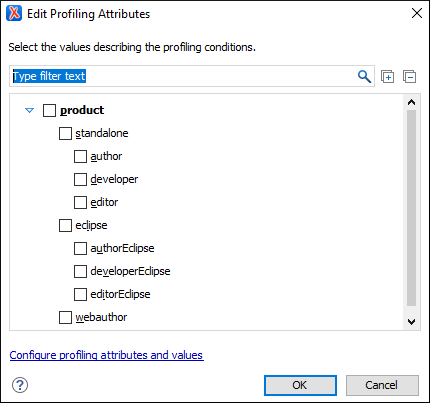

Applying Profiling Attributes
Profiling attributes are applied on element nodes. You can apply profiling attributes on a text fragment (it will automatically be wrapped into a phrase-type element), on a single element, or on multiple elements at the same time. If there is no selection in your document, the profiling attributes are applied on the element at the cursor position.
-
To apply a profiling attribute to content in Author mode, highlight the content and select Edit Profiling Attributes from the contextual menu. To profile an entire element, position the cursor inside the element, right-click, and select Edit Profiling Attributes (you can also right-click the element in the breadcrumb or Outline view).
Step Result: The Edit Profiling Attributes dialog box is displayed and shows all the profiling attributes and their values, as defined for the particular document type (framework). If you have a large list of profiling attributes, you can use the text filter field to search for attributes or values, and you can expand or collapse attributes by using the
 Expand All /
Expand All /  Collapse All buttons to the right of the text filter or the arrow button
to the left of the profiling attribute name.The attributes and values that appear in the dialog box are determined as follows:
Collapse All buttons to the right of the text filter or the arrow button
to the left of the profiling attribute name.The attributes and values that appear in the dialog box are determined as follows:- If you have defined profiling attribute values for the DITA document type in the Attributes and Condition Sets preferences page and you store them at project-level, those values are displayed in the dialog box.
- If you have defined profiling attribute values for the DITA document type in the Attributes and Condition Sets preferences page and you store them at global-level, those values are displayed in the dialog box.
- Otherwise, a generic default set of profiling attributes and values are available.
Figure 1. Edit Profiling Attributes Dialog Box  - In the Edit Profiling Attributes dialog box, select the checkboxes that correspond to the attribute values you want to apply on the document fragment.
-
Click OK to finish the profiling configuration.
Result: The attribute names and values selected in the Edit Profiling Attributes dialog box are set on the elements contained in the profiled fragment. If you only select a fragment of content (rather than the entire element), this fragment is wrapped in phrase-type elements where the profiling attributes are set.
If the Show Profiling Attributes option (available in the
 Profiling / Conditional Text toolbar menu) is selected, a
green border is painted around profiled text in the Author mode and all
profiling attributes set on the current element are listed at the end of the highlighted
block. To edit the attributes of a profiled fragment, click one of the listed attribute
values. A form control pops up and allows you to add or remove attribute values.
Profiling / Conditional Text toolbar menu) is selected, a
green border is painted around profiled text in the Author mode and all
profiling attributes set on the current element are listed at the end of the highlighted
block. To edit the attributes of a profiled fragment, click one of the listed attribute
values. A form control pops up and allows you to add or remove attribute values.Figure 2. Profiling Attribute Value Form Control Pop Up